REPARACIÓN DE LOS COMPONENTES
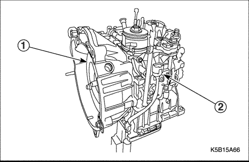


Desmontaje de los componentes principales
Herramientas necesarias
Fijación de empujador de válvula DT-47522
Empujador de válvula DT-47523
Soporte del piñón secundario DT-47531
Extractor/instalador de la contratuerca del piñón secundario DT-47532
Procedimiento de desmontaje
- Desmonte el convertidor de par.
- Quite los tornillos y desmonte el soporte.
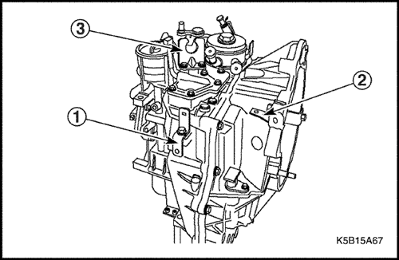
- Quite los tornillos, desmonte el soporte (1, 2) y el soporte (3) del cable del selector.
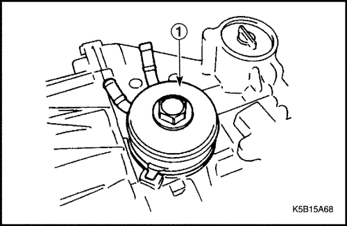
- Quite el tornillo y desmonte el refrigerador de aceite (1).
Aviso:
- Retire la junta tórica.
- No vuelva a usar la junta tórica.
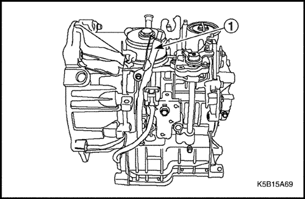
- Quite los tornillos y desmonte el tubo de llenado de aceite (1).
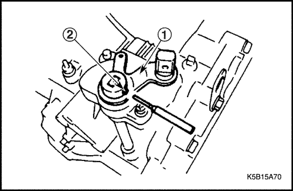
- Use un punzón para desmontar el pasador del muelle (2) y el conjunto de la palanca selectora (1).
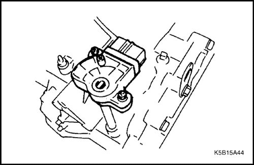
- Quite el tornillo y desmonte el interruptor de TR.
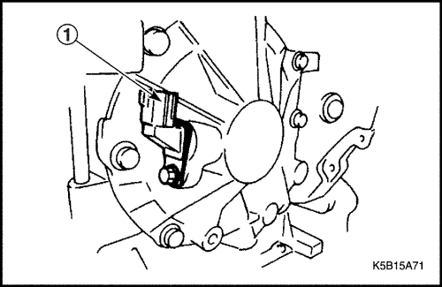
- Quite el tornillo y desmonte el sensor de la turbina (1).
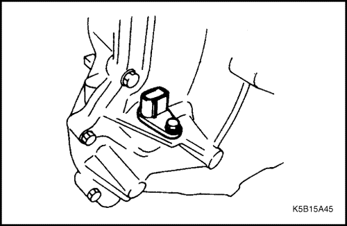
- Quite el tornillo y desmonte el sensor de velocidad del vehículo (1).
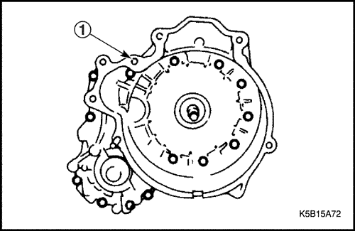
- Con la campana del convertidor (1) hacia arriba, quite los tornillos de instalación. Desmonte luego la campana, golpeándola ligeramente con un martillo de plástico.
Aviso:
- Elimine el sellante residual de la superficie de la campana y de la carcasa.
- Asegúrese de que se ha eliminado todo el sellante.
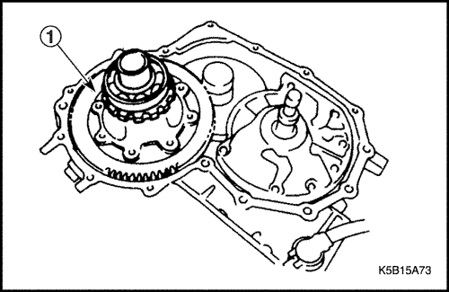
- Desmonte el conjunto del diferencial (1).
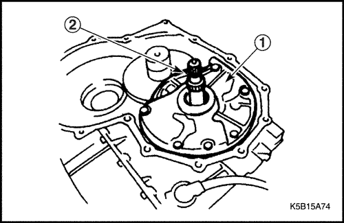
- Desmonte la junta tórica (2) del eje primario y, a continuación, quite los tornillos y desmonte la bomba de aceite (1).
Aviso:
- Al desmontar la bomba, tenga cuidado de que no se caiga el eje primario.
- Si se trata de una transmisión con función de bloqueo, tenga cuidado de no dañar la junta tórica entre el eje primario y el convertidor de par.
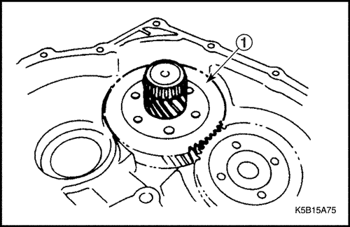
- Desmonte el engranaje reductor (1).
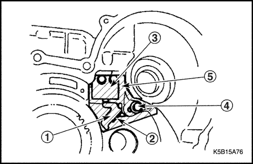
- Quite los tornillos (4) y desmonte la placa deflectora del respiradero (5) y el actuador de soporte (3).
- Al tiempo que balancea el trinquete de estacionamiento, saque el eje de dicho trinquete. Desmonte luego el trinquete de estacionamiento (1), su muelle (2) y su collarín.
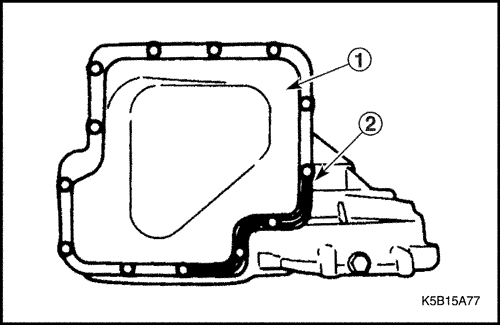
- Quite los tornillos de instalación del cárter del aceite con el cárter (1) mirando hacia arriba. Desmonte luego el refuerzo (2) y el cárter, golpeando ligeramente con un martillo de plástico.
Aviso:
- No use un destornillador para separar el refuerzo del cárter.
- Elimine el sellante residual de la superficie del cárter y de la carcasa.
- Asegúrese de que se ha eliminado todo el sellante.
- Retire los imanes del cárter del aceite.
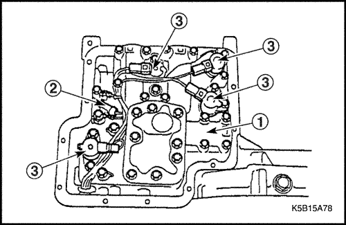
- Retire el conector de cada solenoide (3).
- Quite los tornillos que sujetan el sensor de temperatura del aceite de transmisión (2) a masa, y quite los tornillos de instalación del la válvula de control (1). A continuación, desmonte la válvula.
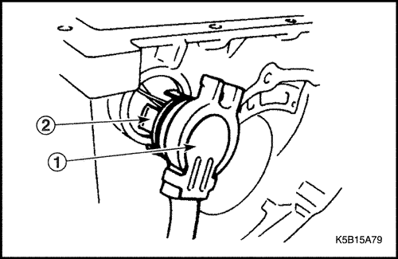
- Mientras presiona el trinquete (2), saque el terminal del solenoide de la carcasa.
Aviso: No tire del cableado cuando saque el terminal (1).
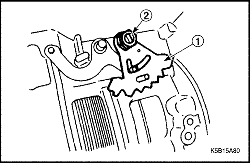
- Quite la tuerca mientras sujeta todo el ancho del eje manual (2) por las caras planas y desmonte el plato manual (1).
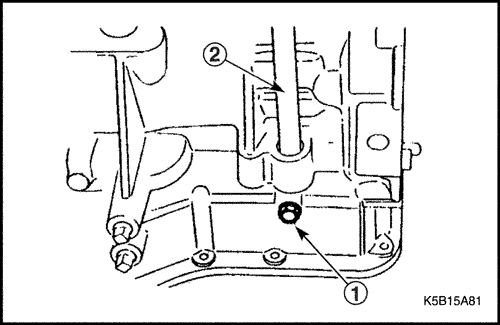
- Quite el tornillo de bloqueo del eje manual (1) y saque el eje (2).
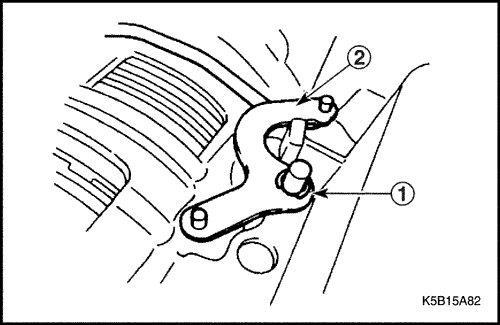
- Desmonte el anillo en E (1) y luego la palanca de estacionamiento y la varilla de estacionamiento (2) como unidad.
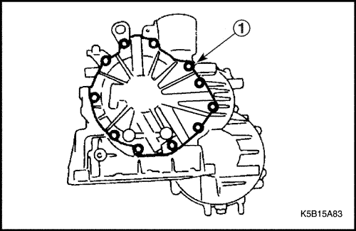
- Quite los tornillos de la tapa lateral (1) con la tapa mirando hacia arriba y luego retire las tapas.
Aviso:
- Retire las juntas tóricas de la cara final de la carcasa.
- No use un destornillador para separar la tapa lateral.
- Elimine completamente el sellante residual de la superficie de la tapa lateral y la carcasa.
- Asegúrese de que se ha eliminado todo el sellante.
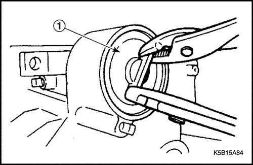
- Quite el anillo elástico de retención con un destornillador de punta plana y extraiga la tapa del servo de cinta (1) con unos alicates.
Aviso: Para que la carcasa no se arañe al quitar el anillo elástico de retención con un destornillador, alise la superficie de la carcasa con papel de lija (esto también evita que se arañe la junta tórica al volver a montar).
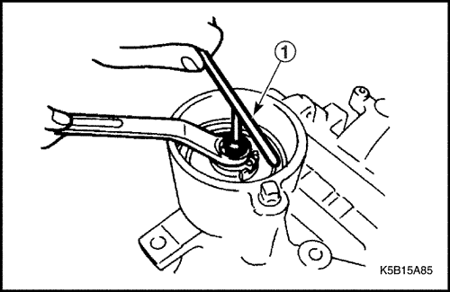
- Sujete el vástago del pistón y afloje la tuerca de bloqueo.
- Afloje el vástago del pistón (1).
Aviso: Apriete provisionalmente la tuerca de bloqueo para que no se salga el pasador de ventilación de aire.
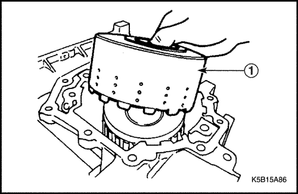
- Desmonte el tambor del embrague de marcha atrás (1).
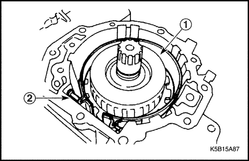
- Desmonte la cinta de freno.
Aviso: Para que la cinta de freno (1) no se agriete al expandirse, átela con alambre.
- Retire el pasador de extremo de anclaje (2).
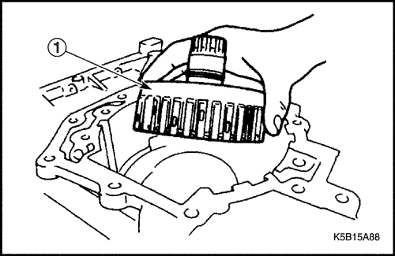
- Desmonte el conjunto del embrague de alta (1).
Aviso: Tenga cuidado de que no se caigan los cojinetes de los dos lados del conjunto del embrague de alta.
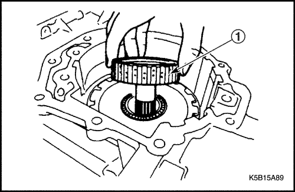
- Desmonte el cubo del embrague de alta (1).
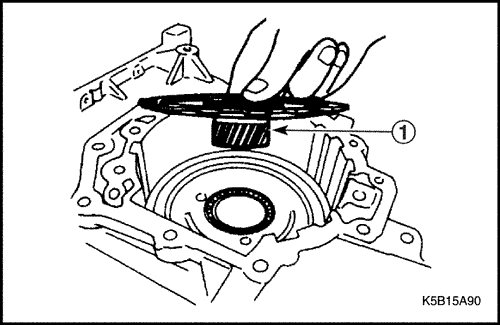
- Desmonte el conjunto del engranaje central delantero (1).
Aviso: Tenga cuidado de que no se caigan los cojinetes del lado de la tapa lateral y la pista del cojinete en el lado del convertidor de par del conjunto de engranaje central delantero.
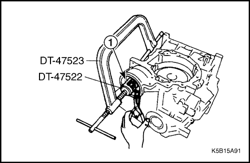
- Use la fijación de empujador de válvula DT-47522 y el empujador de válvula DT-47523 para desmontar el anillo elástico de retención (1) del pistón del servo de cinta.
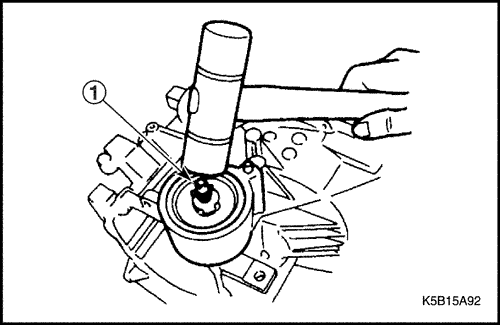
- Golpee ligeramente el vástago del pistón (1) con un martillo de plástico y desmonte el pistón del servo de cinta con la fuerza de reacción del muelle del pistón.
Aviso: El pistón del servo de cinta puede saltar debido a la fuerza del muelle del pistón. Tenga cuidado de que no se caiga el pistón.
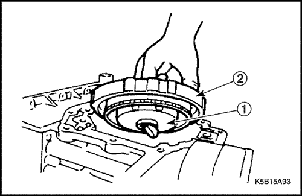
- Retire el anillo elástico de retención y desmonte luego el portasatélites delantero (1) y el embrague unidireccional de baja (2) como una unidad.
Aviso: Tenga cuidado de que no se caiga el cojinete del lado de la tapa lateral y el cojinete de pista combinada del lado del convertidor de par del portasatélites delantero.
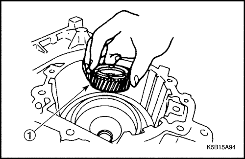
- Desmonte el engranaje central trasero (1).
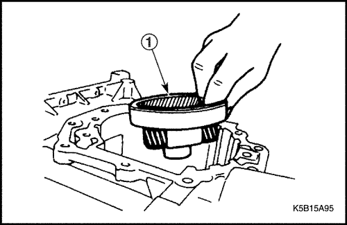
- Desmonte el conjunto del portasatélites trasero (1).
Aviso: Tenga cuidado de que no se caiga el cojinete del lado de la tapa lateral y el cojinete de pista combinada del lado del convertidor de par del conjunto del portasatélites trasero.
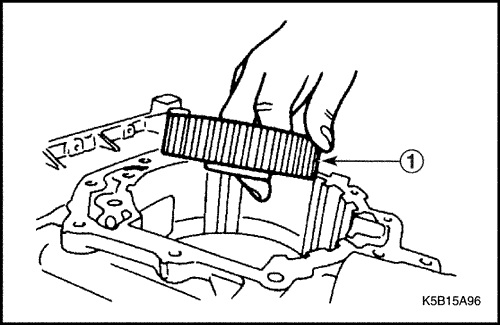
- Desmonte el engranaje interno trasero (1).
Aviso: Tenga cuidado de que no se caiga el cojinete del lado de la tapa lateral y el cojinete de pista combinada del convertidor de par del engranaje interno trasero.
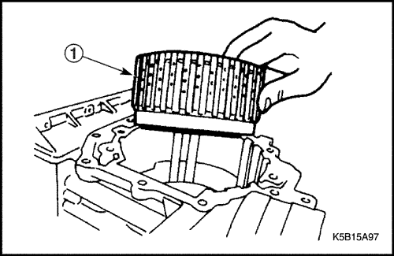
- Desmonte el conjunto del embrague de baja (1) como una unidad.
Aviso: Tenga cuidado de que no se caigan los cojinetes de pista combinada del lado del convertidor de par del conjunto del embrague de baja.
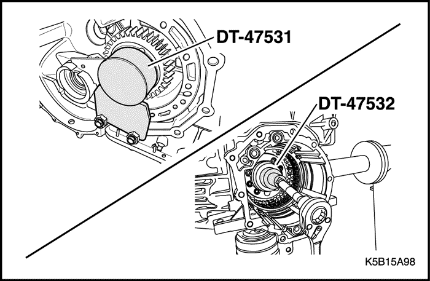
- Sujete el piñón secundario con el soporte DT-47531 y quite la contratuerca del piñón secundario con el extractor/instalador DT-47532.
- Desmonte el piñón secundario.
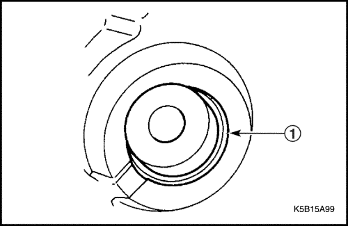
- Desmonte la campana del convertidor y el retén de aceite del lado del diferencial (1) de la carcasa.
- Desmonte el retén de aceite del eje primario de la campana del convertidor.
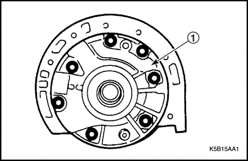
Bomba de aceite
Procedimiento de desmontaje
- Quite los tornillos y la tapa de la bomba de aceite (1).
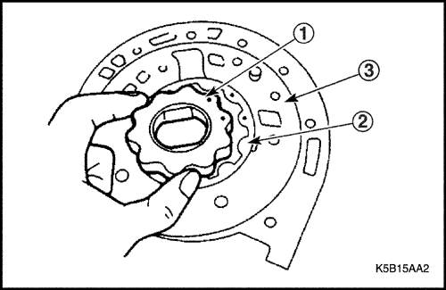
- Saque el rotor interior (1) y el rotor exterior (2) del alojamiento de la bomba de aceite (3).
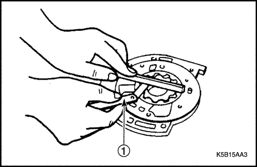
Procedimiento de inspección
- Mida con una galga de espesores (1) las holguras laterales de los rotores interior y exterior.
Holgura (mm): Estándar 0,02 - 0,04
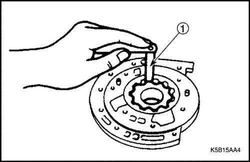
- Mida con una galga de espesores (1) las holguras de las puntas de los rotores interior y exterior.
Holgura (mm): Estándar 0,02 - 0,15
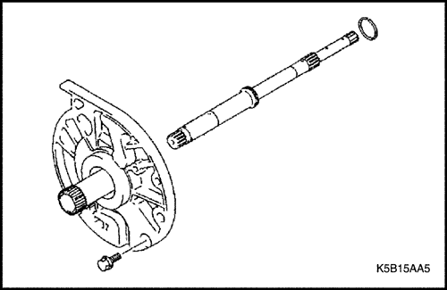
- Compruebe si los demás componentes están dañados o tienen un desgaste anormal.
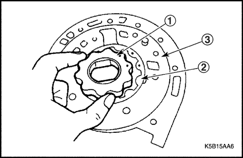
Procedimiento de montaje
Siga estos pasos. Preste atención a lo siguiente durante el montaje:
- Monte el rotor interior (1) y el rotor exterior (2) en el alojamiento de la bomba de aceite (3) con la marca perforada visible.
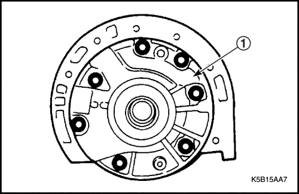
- Coloque la tapa (1) de la bomba de aceite en el cuerpo de la bomba y apriete los tornillos con el par especificado.
Apretar
Apriete el tornillo de la bomba de aceite hasta 9 N•m (80 lb-pulg.).
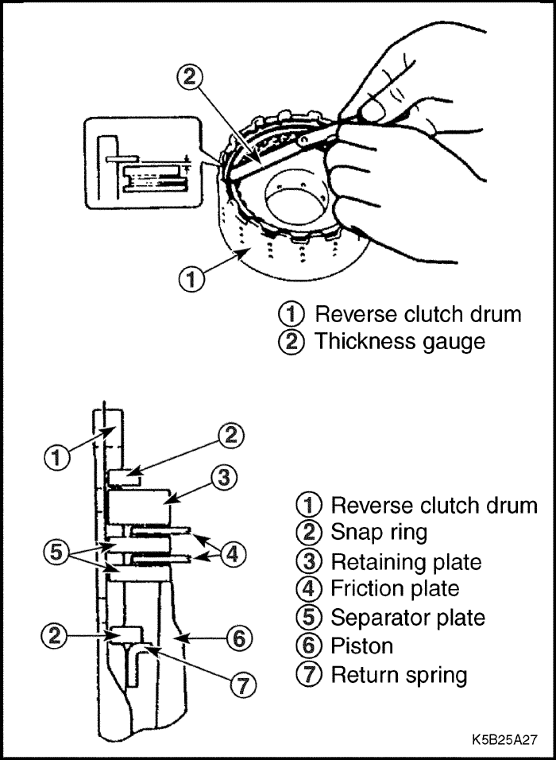
Embrague de marcha atrás
Herramientas necesarias
Compresor de muelles del embrague de marcha atrás DT-47525
Comprobación de funcionamiento
- Mida con una galga de espesores la holgura entre el anillo elástico de retención y el plato de retención.
Holgura (mm):
- Estándar: 0,5 - 0,8
- Límite de aplicación: 1,0
Aviso:
- Si se sobrepasa el límite de aplicación, sustituya el plato de fricción y el plato separador por otros nuevos y elija un plato de retención adecuado para lograr la holgura especificada.
- Si la holgura es inferior al límite de aplicación, elija un plato de retención adecuado con el fin de que la holgura caiga dentro de la gama deseada.
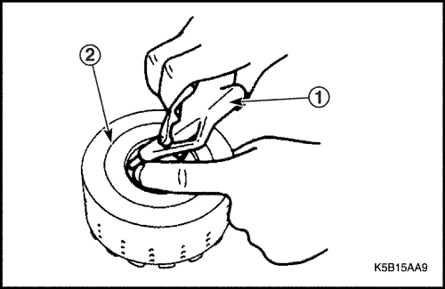
- Sople aire en la entrada de aceite del tambor del embrague de marcha atrás (2) y compruebe el funcionamiento del pistón.
Aviso: Cierre los otros orificios cuando sople aire con una pistola de aire comprimido (1).
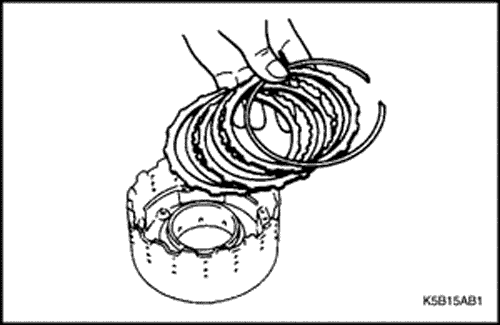
Procedimiento de desmontaje
- Desmonte el anillo elástico de retención y luego desmonte cada plato.
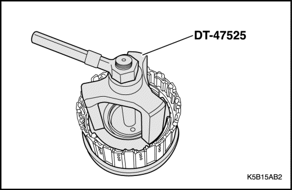
- Use el compresor de muelles del embrague de marcha atrás DT-47525 para presionar el retén del muelle y desmontar el anillo elástico de retención, desmonte luego el muelle de retorno.
Aviso: No aplique fuerza indebida al retén.
- Sople aire en la entrada de aceite del tambor del embrague de marcha atrás (2) para extraer el pistón del embrague de marcha atrás.
Aviso:
- El aire debe soplarse poco a poco a baja presión para no inclinar el pistón del embrague de marcha atrás.
- Si el pistón del embrague de marcha atrás es difícil de quitar soplando aire con una pistola de aire comprimido (1), extráigalo usando unos alicates.
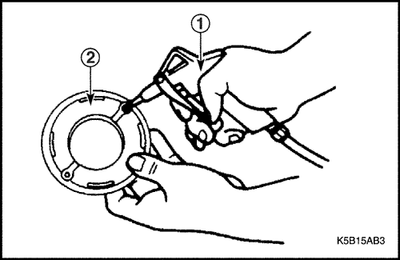
Procedimiento de inspección
- Agite el pistón del embrague de marcha atrás (2) para asegurarse de que la válvula de retención se mueve libremente.
- Asegúrese de que no se escape aire al soplar en el lado en funcionamiento del pistón del embrague de marcha atrás, ni al soplar aire en el lado desengranado.
- Compruebe si la arandela de junta está rota o dañada.
- Compruebe si los platos están quemados, dañados o deformados.
- Compruebe si el tambor del embrague de marcha atrás está quemado o dañado.
- Compruebe si los otros componentes están dañados o deformados.
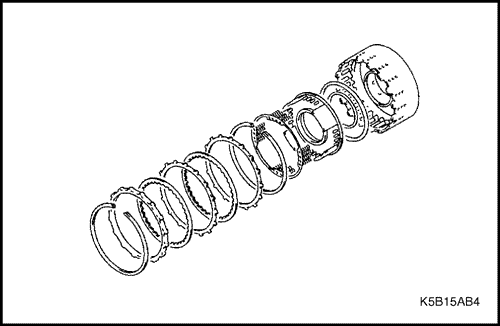
Procedimiento de montaje
Siga estos pasos. Tenga precaución con lo siguiente durante el montaje:
- Sustituya la junta tórica por otra nueva. Ponga aceite de la caja de cambios automática (ATF) en la nueva junta tórica y móntela luego en el pistón del embrague de marcha atrás.
- Tenga cuidado de no retorcer o sacar la junta tórica al introducir el pistón.
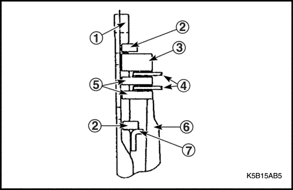
- Asegúrese de que los componentes del plato de embrague se montan en el orden correcto.
- Tambor del embrague de marcha atrás
- Anillo elástico de retención
- Plato de retención
- Platos de fricción
- Platos separadores
- Pistón
- Muelle de retorno
- Tenga cuidado de no deformar el plato del muelle de retorno del embrague de marcha atrás al colocarlo a presión con el DT-47525.
- Asegúrese de que el anillo elástico de retención encaja suavemente en la ranura del tambor.
- Asegúrese de que la abertura del anillo elástico de retención no esté alineado con el tope.
- Asegúrese de que la abertura del anillo elástico de retención esté alineado con la abertura cóncava.
- Antes de usar un nuevo juego de platos de embrague de marcha atrás, sumérjalo en ATF durante más de dos horas.
Embrague de alta
Herramientas necesarias
Compresor de muelles del embrague de alta DT-47527
Comprobación de funcionamiento
- Mida con una galga de espesores la holgura entre el anillo elástico de retención y el plato de retención.
Holgura (mm):
- Estándar: 1,8 - 2,2
- Límite de aplicación: 2,4
Aviso:
- Si se sobrepasa el límite de aplicación, sustituya los platos de fricción y separadores por otros nuevos y elija un plato de retención adecuado para lograr la holgura especificada.
- Si la holgura es inferior al límite de aplicación, elija un plato de retención adecuado con el fin de que la holgura caiga dentro de la gama deseada.
- Sople aire en la entrada de aceite del tambor del embrague de alta (2) y compruebe el funcionamiento del pistón.
Aviso: Cierre los otros orificios cuando sople aire con una pistola de aire comprimido (1).
Procedimiento de desmontaje
- Desmonte el anillo elástico de retención y luego desmonte cada plato.
- Presione el retén de muelle con un compresor de muelles del embrague de alta DT-47527 y desmonte el anillo elástico de retención; desmonte luego el muelle de retorno.
Aviso: No aplique fuerza indebida al retén.
- Sople aire con una pistola de aire comprimido (1) en la entrada de aceite del tambor del embrague de alta (2) para extraer el pistón del embrague de alta.
Aviso:
- El aire debe soplarse poco a poco a baja presión para no inclinar el pistón del embrague de alta.
- Si el pistón es difícil de quitar soplando aire, extráigalo usando unos alicates.
Procedimiento de inspección
- Agite el pistón del embrague de marcha atrás (1) para asegurarse de que la válvula de retención se mueve libremente.
- Asegúrese de que no se escape aire al soplar en el lado en funcionamiento del pistón del embrague de marcha atrás, ni al soplar aire en el lado desengranado.
- Compruebe si los platos están quemados, dañados o deformados.
- Compruebe si la arandela de junta y la junta tórica están rotas o dañadas.
- Compruebe si los otros componentes están dañados o deformados.
Procedimiento de montaje
Siga estos pasos. Tenga precaución con lo siguiente durante el montaje:
- Sustituya la junta tórica y la arandela de junta por otras nuevas. Aplique ATF a la nueva junta tórica y a la arandela de junta, y móntelas en el pistón del embrague de alta.
- Tenga cuidado de no retorcer o sacar la junta tórica al introducir el pistón.
- Asegúrese de montar los componentes del juego de platos del embrague de alta en el orden correcto.
- Anillo elástico de retención
- Plato de retención
- Platos de fricción
- Platos separadores
- Tambor del embrague de alta
- Pistón
- Tenga cuidado de no deformar el plato del muelle de retorno del embrague de alta al colocarlo a presión.
- Asegúrese de que el anillo elástico de retención encaja suavemente en la ranura del tambor.
- Asegúrese de que la abertura del anillo elástico de retención no esté alineado con el tope.
- Asegúrese de que la abertura del anillo elástico de retención esté alineado con la abertura cóncava.
- Antes de usar un nuevo juego de platos de embrague de alta, sumérjalo en ATF durante más de dos horas.
Embrague de baja
Herramientas necesarias
Compresor de muelles del embrague de baja DT-47524
Comprobación de funcionamiento
- Mida con una galga de espesores la holgura entre el anillo elástico de retención y el plato de retención.
Holgura (mm):
- Estándar: 0,8 - 1,1
- Límite de aplicación: 1,3
Aviso:
- Si se sobrepasa el límite de aplicación, sustituya el plato de fricción y el plato separador por otros nuevos y elija un plato de retención adecuado para lograr la holgura especificada.
- Si la holgura es inferior al límite de aplicación, elija un plato de retención adecuado con el fin de que la holgura caiga dentro de la gama deseada.
- Sople aire en la entrada de aceite del tambor del embrague de baja (2) y compruebe el funcionamiento del pistón.
Aviso: Cierre los otros orificios cuando sople aire con una pistola de aire comprimido (1).
Procedimiento de desmontaje
- Desmonte el anillo elástico de retención y luego desmonte cada plato.
- Use el compresor de muelles del embrague de baja DT-47524 para presionar la tapa de anulación y desmontar el anillo elástico de retención, desmonte luego la tapa de anulación y el muelle de retorno.
Aviso: No aplique fuerza indebida al retén.
- Sople aire con una pistola de aire comprimido (1) en la entrada de aceite del tambor del embrague de baja (2) para extraer el pistón del embrague de baja.
Aviso:
- El aire debe soplarse poco a poco a baja presión para no inclinar el pistón del embrague de baja.
- Si el pistón del embrague de baja es difícil de quitar soplando aire, extráigalo usando unos alicates.
Procedimiento de inspección
- Compruebe si los platos están quemados, dañados o deformados.
- Compruebe si la junta tórica está rota o dañada.
- Compruebe si la superficie de cierre (2) de la tapa de anulación (1) presenta daños o roturas.
- Compruebe si los otros componentes están dañados o deformados.
Procedimiento de montaje
Siga estos pasos. Tenga precaución con lo siguiente durante el montaje:
- Sustituya la junta tórica por otra nueva. Ponga ATF en la nueva junta tórica y móntela luego en el pistón del embrague de baja.
- Tenga cuidado de no retorcer o sacar la junta tórica al introducir el pistón del embrague de baja.
- Monte con la periferia del plato de apoyo tocando el embrague de baja.
Aviso: Tome nota de la dirección del plato de apoyo.
- Asegúrese de montar los componentes del juego de platos del embrague de baja en el orden correcto.
- Anillo elástico de retención
- Plato de retención
- Platos de fricción
- Platos separadores
- Tambor del embrague de baja
- Tapa de anulación
- Plato de apoyo
- Pistón
- Muelle de retorno
- Tenga cuidado de no deformar la tapa de anulación al colocarla a presión.
- Asegúrese de que el anillo elástico de retención encaja suavemente en la ranura del tambor.
- Asegúrese de que la abertura del anillo elástico de retención no esté alineado con el tope.
- Asegúrese de que la abertura del anillo elástico de retención esté alineado con la abertura cóncava.
- Antes de usar un nuevo juego de platos de embrague de baja, sumérjalo en ATF durante más de dos horas.
Freno de marcha atrás y baja
Herramientas necesarias
Compresor de muelles del freno de marcha atrás y baja DT-47526
Comprobación de funcionamiento
- Mida con una galga de espesores la holgura entre el anillo elástico de retención y el plato de retención.
Holgura (mm):
- Estándar: 0,8 - 1,1
- Límite de aplicación: 1,3
Aviso:
- Si se sobrepasa el límite de aplicación, sustituya los platos de fricción y separadores por otros nuevos y elija un plato de retención adecuado para lograr la holgura especificada.
- Si la holgura es inferior al límite de aplicación, elija un plato de retención adecuado con el fin de que la holgura caiga dentro de la gama deseada.
- Sople aire en la entrada de aceite (2) de la cara de instalación de la válvula de control y compruebe el funcionamiento del pistón.
Aviso: Cierre los otros orificios cuando sople aire con una pistola de aire comprimido (1).
Procedimiento de desmontaje
- Desmonte el anillo elástico de retención y luego desmonte cada plato.
- Presione el retén de muelle con un compresor de muelles del freno de marcha atrás y baja DT-47526 y desmonte el anillo elástico de retención; desmonte luego el retén y el muelle de retorno.
Aviso:
- No aplique fuerza indebida al retén del muelle.
- Use las herramientas especiales para que la fuerza se aplique uniformemente al retén del muelle.
- Sople aire con una pistola de aire comprimido (1) en la entrada de aceite (2) de la cara de instalación de la válvula de control y compruebe el funcionamiento del pistón del freno de marcha atrás y baja.
Aviso:
- El aire debe soplarse poco a poco a baja presión para no inclinar el pistón.
- Si el pistón es difícil de quitar soplando aire, extráigalo usando unos alicates.
Procedimiento de inspección
- Compruebe si los platos están quemados, dañados o deformados.
- Compruebe si la junta tórica está rota o dañada.
- Compruebe si los otros componentes están dañados o deformados.
Procedimiento de montaje
Siga estos pasos. Tenga precaución con lo siguiente durante el montaje:
- Sustituya la junta tórica por otra nueva. Ponga ATF en la nueva junta tórica y móntela luego en el pistón del embrague de baja.
- Tenga cuidado de no retorcer o sacar la junta tórica al introducir el pistón del embrague de marcha atrás y baja.
- Monte con la periferia del plato de apoyo tocando el embrague de marcha atrás y baja.
Aviso: Tome nota de la dirección del plato de apoyo.
- Asegúrese de montar los componentes del juego de platos del embrague de marcha atrás y baja en el orden correcto.
- Anillo elástico de retención
- Plato de retención
- Platos de fricción
- Platos separadores
- Carcasa
- Plato de apoyo
- Pistón
- Muelle de retorno
- Tenga cuidado de no deformar el retén del muelle al usar el compresor de muelles del freno de marcha atrás y baja DT-47526.
- Asegúrese de que el anillo elástico de retención encaja suavemente en la ranura del tambor.
- Asegúrese de que la abertura del anillo elástico de retención no esté alineado con el tope.
- Asegúrese de que la abertura del anillo elástico de retención esté alineado con la abertura cóncava.
- Antes de usar un nuevo juego de platos de freno de marcha atrás y baja, sumérjalo en ATF durante más de dos horas.
Freno de segunda
Procedimiento de inspección
Cinta del freno de segunda
- Compruebe si la cinta del freno de segunda está dañada, desgastada o descolorida. Si el resultado no es satisfactorio, sustituya la cinta por otra nueva.
Aviso: Antes de poner una nueva cinta en su sitio, sumérjala en ATF durante más de dos horas.
Pistón del freno de segunda
- Compruebe si la arandela de junta del pistón está dañada.
- Compruebe si el alojamiento del pistón de la carcasa de la caja de cambios está dañado o presenta un desgaste anormal.
Eje primario
Procedimiento de inspección
- Compruebe si las estrías están dañadas.
- Compruebe si la arandela de junta está rota o desgastada.
Planetario
Procedimiento de inspección
- Compruebe cada engranaje en busca de daño o decoloración.
- Asegúrese de que todos los engranajes giran sin problemas y de que no hacen ruidos anormales.
Embrague unidireccional
Procedimiento de inspección
- Compruebe si el embrague unidireccional está dañado o desgastado.
Trinquete de bloqueo de estacionamiento, muelle de retorno
Procedimiento de inspección
- Compruebe si el trinquete de bloqueo estacionamiento está dañado o desgastado.
- Compruebe si el muelle de retorno está deformado o dañado.
Engranaje interno, engranaje central
Procedimiento de inspección
- Compruebe si los dientes de los engranajes están dañados o tienen un desgaste anormal.
Embrague unidireccional de baja
Procedimiento de inspección
- Monte el embrague unidireccional de baja con el instalador DT-47528.
| © Copyright Chevrolet Europe. Reservados todos los derechos |